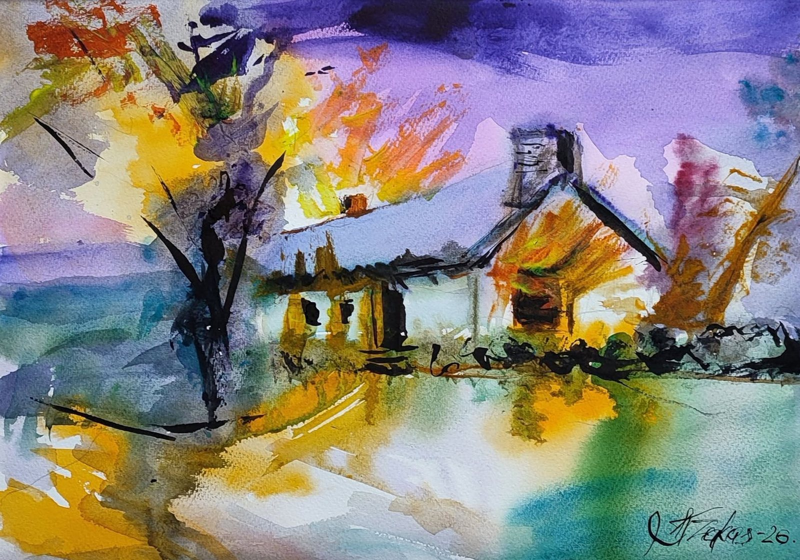
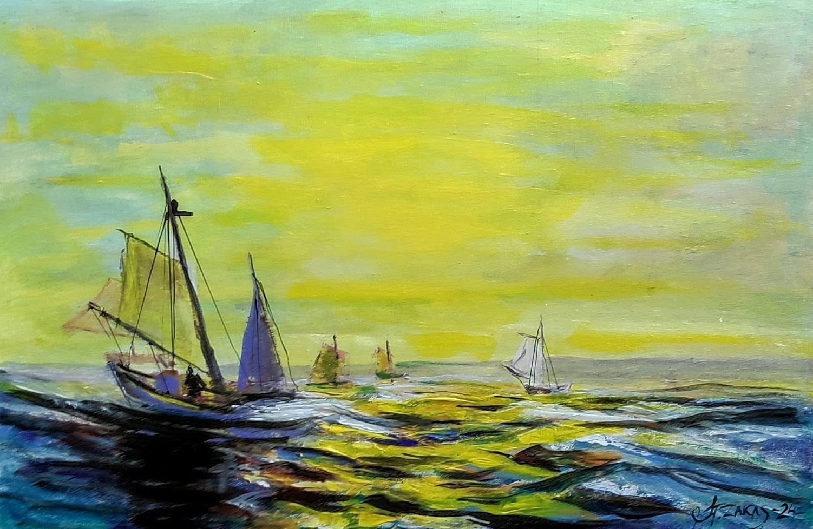
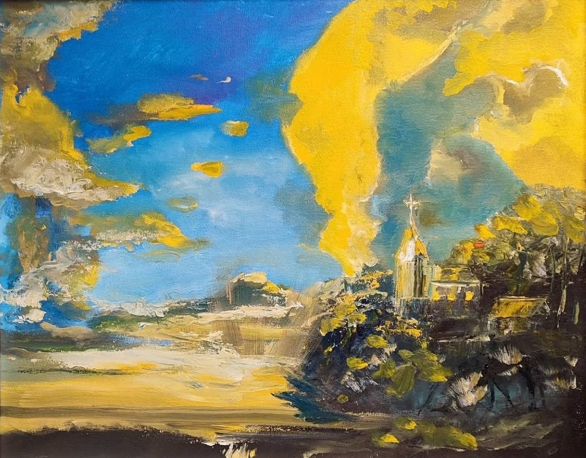
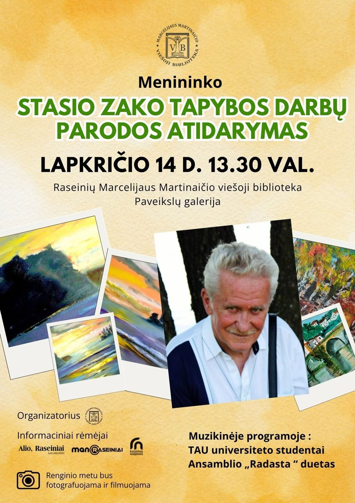
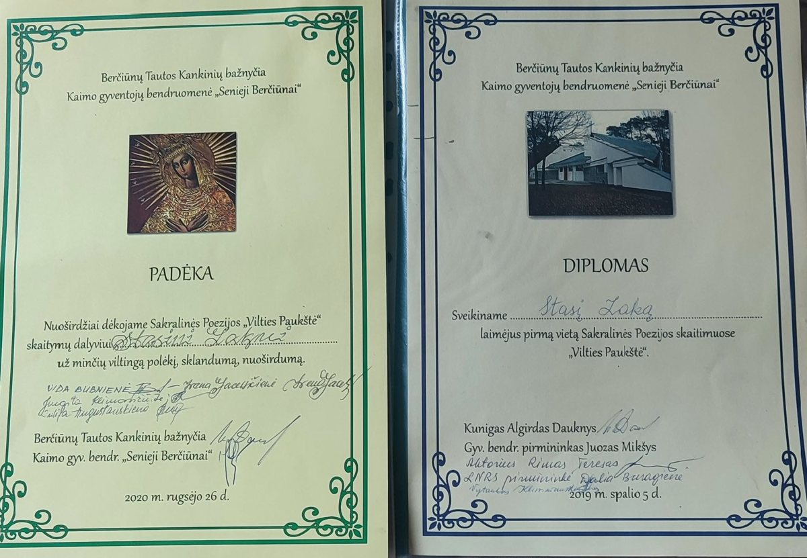

Stasys
Zakas
Tapytojas ir poetas iš Panevėžio. Peizažai, jūra, miestai ir eilės, parašytos šalia paveikslų.

Regata

Malda
Po audros
Bėgant nuo audros
Kataloge 194 darbai: peizažai, jūra ir laivai, miestai, gėlės, portretai.
Visa kūrybaAutoriaus žodis
Per gyvenimą greitai nueisiu.
Pėdos, nors neryškios, pasiliks.
Rasite eiles, paveikslus,
Pasiimkite, jeigu patiks...
Iš eilėraščio „Rašau...“
Temos

Parodos ir
renginiai
-
2025Personalinė paroda
Tapybos darbų paroda
Raseinių Marcelijaus Martinaičio viešoji biblioteka, paveikslų galerija
Lapkričio 14 d.
-
2026Festivalis
„Menų magija“
Šilaičių menų festivalis
Rugpjūtis -
Data tikslinamaSakralinės poezijos skaitymai
„Vilties paukštė“
Tautos kankinių bažnyčia, Berčiūnai, Panevėžio r.
